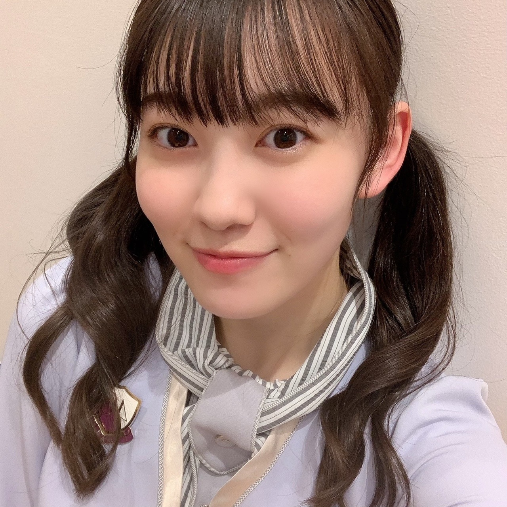
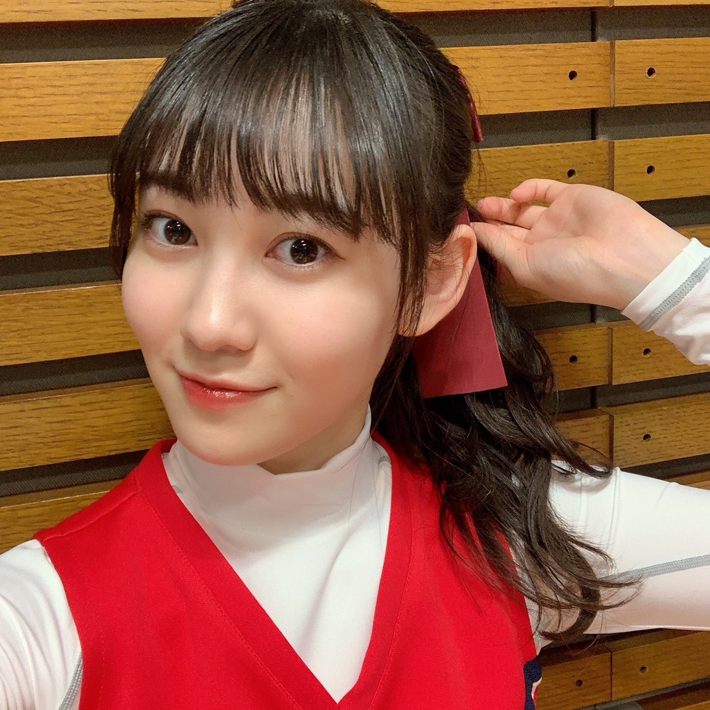

2020/1126Thuついん 松尾美佑
| ᐕ)⁾⁾
ちらっ
高校2年生
16歳の
話したい事いっぱいな
松尾美佑です
ということでさっそくお話を始めちゃいます
まず、昨日は
猫舌SHOWROOM『乃木坂46にゃんば〜1』
ありがとうございました！
黒見ちゃんと皆さんと一緒に2時間もお話が出来てとっても楽しかったです！
生まれて初めての一瞬過ぎる2時間でした
( ´͈ ᵕ `͈ )
黒見ちゃん案でひっさしぶりにツインテールなんかしちゃったりしちゃいまして(⸝⸝⍢⸝⸝)
それも新鮮な感じで始まる前からワクワクが止まらなかったです☺︎
黒見ちゃん終始面白くて楽しかったです(^^)
初めてモノマネも皆さんの前でやってみたりしちゃいまして、
いつもの2人の空気を皆さんと一緒に共有できたかなぁと思いました！

ついんてーる
ミュウランドに入国して下さった皆さんありがとうございました！
(訳: 見に来て下さった皆さんありがとうございました！)
建国できて嬉しかったです。
そして！スマイルガールズのお話
この度スマイルガールズに再加入しましたミユです！
スマイルガールズは本当に楽しくて笑顔になれるので大好きです☺︎
これからも皆さんを応援出来たら嬉しいです
白鳥さんと御一緒させて頂けたことも本当に嬉しかったです。
ありがとうございました！！

ミユ
載せ忘れていた幼なじみなミユ
今日は瑠奈ちゃんからの質問コーナーに答えます☺︎
瑠奈ちゃんからの強い希望です。
(私は1度お断りをしました)
✽実は表では言っていない私(瑠奈ちゃん)の好きなご飯のメニューはなんだと思いますか
分からないです。
✽ちなみに1番の答えは焼き飯なんですよ。
昨日はお昼も夜も焼き飯を食べました
ほほう。
✽ここで1つあなたは気づいた事があるでしょう？
今のところ何も気づけていないです。
✽私が中華が好きだということ。
でもそうするともう1つ疑問がうまれるでしょう？
ほほう。疑問が生まれなくて疑問です。
✽焼き飯と回鍋肉のセットがあったらあなたは白米を☆%¥€〆^＊～
なんて言った？
次回はしっかり皆さんからの質問にお返事したいと思います( ¨̮ )
明日は〜
なお〜〜〜〜〜〜〜
今日は甘栗な気分┏|∵|┛
最後までありがとうございました
また5日後
ミュウでした¨̮
ばいっっっっっっっ( Ꙭ )/''
コメント(203)
猫舌、最高でした！
最後、みゆちゃんに名前呼んでもらいました！
ありがとうー
晴れてミュウランドの国民になったよーー(*´▽｀*)
ツインテール超新鮮で可愛すぎました！！
ゆりちゃんマネは、4期の中でも一番上手じゃない？
声だけ聴いたら分からん！
かっきーといい勝負かも(笑)
とっても楽しそうなみゆちゃんが素敵でした！
黒見ちゃんとナイスコンビだね、また見たい！
幸せな気持ちになったよ、ありがとう！
スマイルガールズ面白かった！
今回は寝たり起きたり、大変だったね！
みゆちゃん、やっぱりチアのユニフォーム似合うね(^▽^)/ かっこよかったよ！
ライブもだんだん近づいてきたねー
楽しみにしてる！
猫舌お疲れ様！！
終始ハイテンションなミュウちゃんめっちゃかわいかった。
やっぱり笑顔がいいね！
昨日見てて改めて思ったもん。
ミュウちゃんの笑顔見てると元気出てくる。いつも本当にありがとう。
初猫舌やったけど楽しめてるようでよかったです。
またミュウちゃんが出てくれるの楽しみにしてるね。
貴重なツインテありがとう！笑
スマイルガールズ正式加入やね。
4人になってパワーアップしてた！
これからも色んな人を元気にしてあげてください！！
修学旅行の夜はうるさいの確定。笑
ではでは体調には気をつけて。
次のブログも待ってます。
いつもありがとう。
くろみちゃんナイスです笑
新制服も空色のさわやかさがみゆちゃんの爽やかさに合っていてめっちゃ似合ってます☺︎︎︎︎
るなちゃんの質問に対する質問返しが秀逸すぎてクスッとなりました|• •๑)"
るなちゃんも少し不思議で面白い子ですね！
4期生の皆さんがとても仲良さそうで、色んなエピソードを聞いてほっこりしています(๑ ˊ͈ ᐞ ˋ͈ )
コメント返しも楽しみにしています！
今までのコメントから質問を拾ってくれたら嬉しいな¨̮なんて思ったり…）Oo｡.（´-`）
お体に気をつけて頑張ってください！
応援していますᕙ( ˙-˙ )ᕗ
ブログ更新ありがとう！
ー質問ー
・ついついやってしまう癖ってある？
・最近見た夢ってなに？
・写真集を発売するならどこで撮影したい？
ありがとう！次回も楽しみにしているよ。
質問させてもらいます。
・カラオケでよく一番歌う歌とかある？
・連絡してみたい先輩とかいる？
・寿司で一番好きなネタは？
昨日の猫舌見たよ～ くろみんとのペア最高だったよー
ツインテールめちゃくちゃかわいかったよ！
美佑ちゃんの25000人で国作れる発言は、ビックリしたよ僕も配信見てたからミュウランドの国民かなー 笑
美佑ちゃんって表情豊かだね リアクションが見てて面白かったよ
そして、ゆりちゃんのモノマネね あれはとてつもなく似てた！予想以上で一瞬本人が来たのかと思っちゃったよ
幼なじみのミユとスマイルガールズのミユの写真ありがとー幼なじみのミユの髪型好きだなー こんな幼なじみ欲しかったなー あと、凹んでる時スマイルガールズ来て欲しい！
瑠奈ちゃんの質問コーナーはコントなのかな？会話内容が面白いね 考察能力が高くないとわからないね 笑
美佑ちゃんはのぎおびいつでるかなー ペアが誰かわからないけど楽しみにしてるね！絶対見る！
それじゃあまたいつかご～
ばいっっっっっっっ( Ꙭ )/''
SHOWROOMお疲れ様でした
ついんてーるめっちゃ可愛かったよ新制服も似合ってて素敵だった
2人とも笑顔で楽しそうだったねこちらもめっちゃ楽しかった
ありがとう
みゆスマイル最高!
入国出来て良かったです
また入国出来る日を楽しみに待ってます
本当にあっという間の2時間だったなぁ
2時間ってあんなに短かった?
誰か時間早送りしてたな
ノギザカスキッツ見たよ
面白かった
スマイルガールズ再加入おめでとう
これからもたくさんの方々を応援してね
応援を頑張ってるスマイルガールズを応援してます
僕も言ってないけど焼き飯好き
よく作って食べる
食べたくなってきた作ろうかな
ブログ更新ありがとう
ではまたね
ばいばい
「スマイルガールズ」かなりのインパクトですね。衣装にも負けないかわいらさです。
この番組への期待感が高まります。
がんばれー、みゅうちゃん！
あれ～るなぴからの質問解らないの？
僕は150パーセント完璧な返答が出来ましたよ♪
美佑ちゃんと同じ高校2年生の愛知の覇王です！
さくらちゃんとあやめちゃんと楓さんと同じ愛知県出身だよ！
ノギザカスキッツ見たよ！
美佑ちゃんのポニーテール、めっちゃ可愛かったよ！
猫舌show roomも見たよ！
美佑ちゃんと黒見ちゃんのツインテール、めっちゃ可愛かったよ！
これからもずっと応援するので頑張ってください！
何がってツインのテイルもとびきり明るいチアガな表情とトークも想像超えるクオリティーのモノマネも総じてgood job
初の2時間トーク生配信おつー
乃木坂は見た目も中身もめちゃめちゃcompetitiveやけん、乃木坂ちゃんは両方の成長がはえーのなんのって、最高ですか
私はなります。
が、かれこれ20年以上食べてないなぁ。
学校ある日はやっぱり見るの遅くなっちゃう
唐突だけどすっごく残念なニュースがあったの
4期生ライブの日に英検があるんだけど
見事に時間が被っててライブ見れそうにないんだぁ
とってもとっても辛いけどみゆりんたちも頑張ってるから
私も英検頑張ろうって思うことにしようと思ってる！
悪いニュースから言っちゃったけどいいニュース(？)もあるの！笑
福袋買おうかすっごく悩んでたらお母さんがクリスマスプレゼントねって買ってくれたの！笑
届くの2月くらいだって書いてあったけど
今からとっても楽しみなんだ〜
✂︎- - - - - - - -キリトリ- - - - - - - - - - -✂︎
SHOWROOMとっても可愛かったし見ててとっても楽しかった！
素敵な時間をありがとう☺︎
ミュウランド移住希望者です！
どうしたら移住できるかな？笑
ツインテールもとっても可愛いし 幼なじみなみゆも可愛いし
とにかく可愛すぎて愛が溢れ続けてる！
✂︎- - - - - - - -キリトリ- - - - - - - - - - -✂︎
色んなことがある毎日だけど
みゆりんの笑顔を見る度に頑張ろうって思える
私にとってみゆりんは希望なんだ〜
最後に質問！
【質問】
✽4期生ライブでなんか1つカメラ目線でポーズ決めて欲しい！
✽4期生ライブの準備は順調？？
✽ミュウランド移住希望なんだけどどうしたらいい？
今日も素敵なブログをありがとう☺︎
また5日後楽しみにしてるね！
イェーイv(・∀・*)
イェーイv(・∀・*)
ﾜｧ───ヽ(*ﾟ∀ﾟ*)ﾉ───ｲ
スマイルガールBeautiful！！
昨日猫舌じゅーとみてたよ(^-^)
モノマネ似てたよ！( ˙_˙ )
みゆちゃんの話したいことをいっぱい聞きたい僕です
猫舌SRお疲れ様〜なんか一人の時よりはっちゃけてなかった？笑
めっーちゃ楽しそうでずっと笑顔だったね！見てるこっちも楽しかったしいっぱい笑わせてもらったよ！
ツインテールも可愛かったし新制服も似合ってたよ
ミュウランド最高でした楽しい時間をありがとうね(*´˘`*)
スキッツact2まだ放送されてないから楽しみにしてます(*^^)v
瑠奈ちゃんの質問なにこれ笑
それに対するみゆちゃんの返しもさ笑笑 膀胱瘻って笑
コントかよꉂꉂ(ˊᗜˋ)
またね〜次回も楽しみにしてます！
猫舌showroomお疲れ様でした。黒見ちゃんもお疲れ様でした、台本がしっかりしているのか、進行がスムーズにいった感じがします。スマイルガールズも自分が思うコントの様式でとても良かったです。
瑠奈ちゃんの質問に美佑ちゃんの考えも含めて会話っぽくなってて面白いですね、そこで「焼き飯」って聞いた事はあるけど、食べた事がないので、軽く調べてみましたが、炒飯みたいな物である、まぁ細かい卵が先か鶏が先かみたいな話はよく分からないですけど、瑠奈ちゃんは中華料理がお好きだそうで、それが知れて嬉しいです。
関西の方はお好み焼きをおかずにご飯を食べたりするらしいですね、自分もナポリタンサラダでご飯を食べますので、何となくわかります。少しカオスですかね！中華料理でおかずだったら、今は中辛の麻婆豆腐な気分ですかね！青椒肉絲とか回鍋肉も良いですね！他は自分存じてませんね！この話題で曲をかけるとしたら、山崎まさよしさんの「中華料理」ですかね！
いやぁ〜瑠奈ちゃんはなんか斬新奇抜な感じがしますね！ルパン三世もびっくりのとんでもない物をとられそうです。
おやすみ
昨日ミュウランドに入国しました～
冬に聞きたい乃木坂の歌 確かになぁちゃんは冬って感
じしますよね。か細くてはかなげで、白いイメージ。
ゆりちゃんのモノマネするメンバー結構いるけどみゆ
ちゃんが一番似ていると思います。声の感じからして、
ローラなんかもできるんじゃないかな？
ってことはローラのモノマネ得意なまいやんのモノマネ
もできるのでは！？ ぜひ挑戦してみてください～
とても似合ってるよ！
ノギスキのスマイルガールズも幼馴染みゆも見たよ！あの衣装かわいいし、ピンクパーカーも好き！
瑠奈ちゃんからの質問コーナーおもしろいね！場の雰囲気が伝わってくるよ〜。
またやってね？
待ってたよー！
ゆりちゃんのモノマネにすぎてた笑
とりあえずみゆランドに遊びに行きたい笑
甘栗が食べたい気分です♪ブログ更新ありがとう！
昨日のモノマネ超似てました！悠里ちゃんがいるかのようだった！w
2時間あっという間でしたね。二人のトーク面白かったです！天然で時々分からなくなるくろみんと笑顔でちょっとSなミュウちゃん見てるの楽しかったです！
またやって欲しいなぁ〜
最後に質問です！
○スマイルガールズは、どうやったら会えますか？
またね！
ＳＨＯＷＲＯ０Ｍ見たよ～。
くろみちゃんと二人、まだ本格的活動が
始まって日も浅いのに、よく頑張りまし
た。
ツインテールもそうだけど、なんか凄く
楽しんでたなって。
スマイルガールズ、正式入団おめでとう。
ミュウちゃんひと際色が白いね。
うーむ。るなちゃん、一筋縄ではいかな
いね。
ライブ楽しみです！応援しています！
猫舌お疲れさま！ミュウちゃんのツインテ見慣れなさすぎてビックリだったよ！
体調には気をつけてね。
ついんてーる、可愛いよ！
二人の空気感、最高だったよ！
ミュウランドは入国できなくて残念でした。髪型似合ってます!
スマイルガールズは好きなスキッツなので、みゆちゃんが入ってとても嬉しいです！
次回も期待してます！
12月も1と6の日に更新ですね。
みゆちゃんは最近どれくらい厚着してますか？
猫舌SRとっても楽しかったです！
くろみんとフレッシュでしたよ！
お揃いツインテ似合ってました✨
くろみん凄く面白かったですし、
ミュウランドも嬉しかったです☆
スマイルガールズも素敵でした！
見てとっても元気がでましたよ✌
幼なじみミウも懐かしいですー！
るなぴもミステリアスですよね♪
中華が食べたくなりましたよ～☺
スマイルガールズに再加入、おめでとう！
みゆちゃん今日も可愛いです。
みゆちゃん今日も１日お疲れ様です。
今日はお仕事でした。
今日は凄くバタバタで忙しかったです。
明日はお仕事お休みなのでゆっくりと休みます。
土曜日からもお仕事一所懸命頑張ります。
これからもお仕事頑張って下さい。
自分もお仕事頑張ります。
これからのブログを楽しみにしてます。
脚が白いね！
猫舌とても面白かったです！
ゆりちゃんのモノマネめっちゃそっくりでめっちゃ上手くて驚きました～！！ スキッツでもぜひやってください！！
ミュウちゃんは笑顔が凄く可愛いと思います！ ツインテールも可愛いです！ 笑
質問
ドラマを見るのは好きですか？ 好きなら、今クールのドラマの中で見てるドラマはありますか？
ミュウランド夢のような場所でした。楽しかったです✌
ツインテールとても似合ってました！！あと、ゆりちゃんのモノマネ最高に似てて、最高に面白かったです笑 また、やってほしいです えびマヨ！！
昨日、みかんを6個食べたんですよ。美味しすぎて。でも、久しぶりのみかんすぎて、お腹がびっくりして次の日あまりお腹の調子が良くなかったです笑
気を付けないとですね。今日はみかんを2個食べました。
See you again !!
「スマイルガールズ」では挫折を乗り越えたミユが晴れて復帰、白鳥さんをゲストに迎えた貴重なスキット。4人の明るさと楽しさが伝わって来ます♪
るなぴとの独特な応酬が実にユーモラス。
ミュウランドすごかったですね！
素敵な２時間をありがとうございました！！
猫舌みたよ！モノマネうますぎ！
スキッツのスマイルガールズも楽しそうで良かったです。
他に修得中のモノマネないの〜？
コメントする

PROFILE
新4期生リレー
202104
| SUN | MON | TUE | WED | THU | FRI | SAT |
|---|---|---|---|---|---|---|
| 1 | 2 | 3 | ||||
| 4 | 5 | 6 | 7 | 8 | 9 | 10 |
| 11 | 12 | 13 | 14 | 15 | 16 | 17 |
| 18 | 19 | 20 | 21 | 22 | 23 | 24 |
| 25 | 26 | 27 | 28 | 29 | 30 | |

昨日の猫舌SHOWROOM黒見ちゃんとのペアとても面白かったよ。
ツインテールの破壊力に思わず声を出してしまったり…。
黒見ちゃんの天然ぶりやみゅうちゃんが悠里ちゃんのモノマネ上手いとか思ってたよりいっぱいしゃべるなぁとかあっという間の２時間でした
まだまだいつものテンションでいろんなお話を聞きたいなぁって思いました。
四期生ライブまであと少し。
今からとても楽しみです。
これからも応援してます。